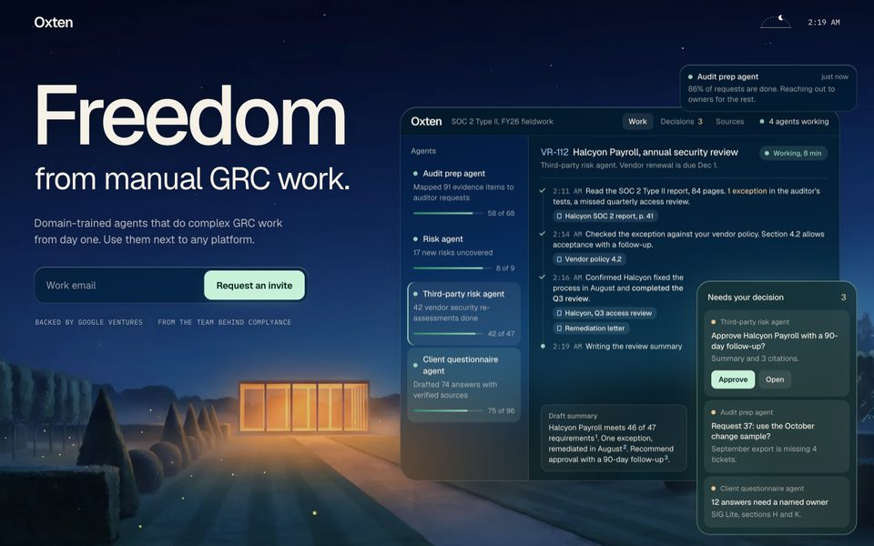
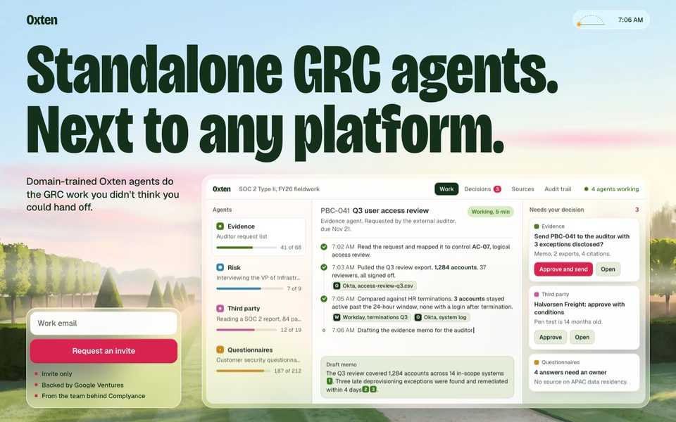
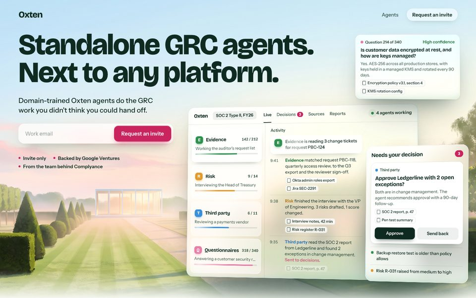
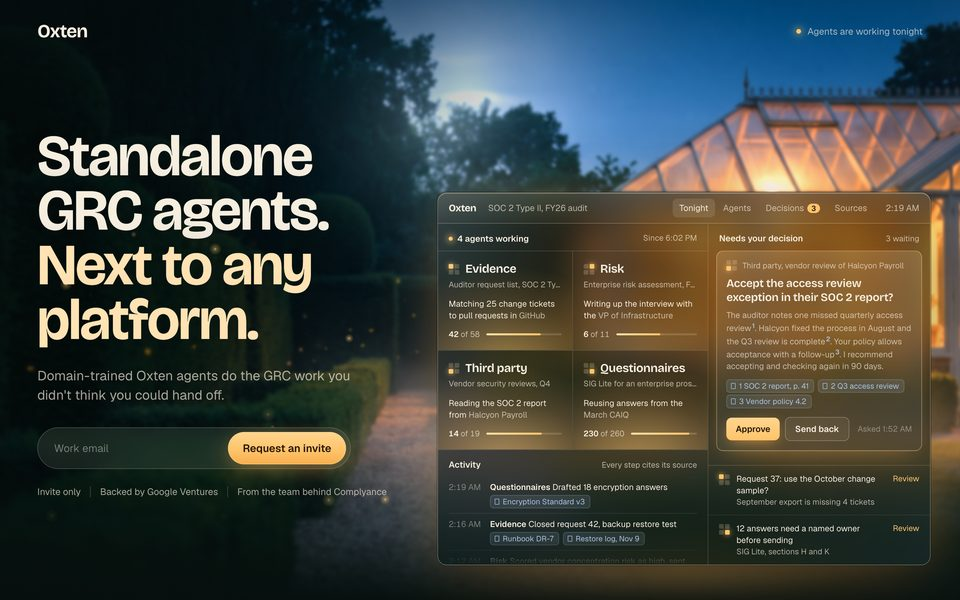
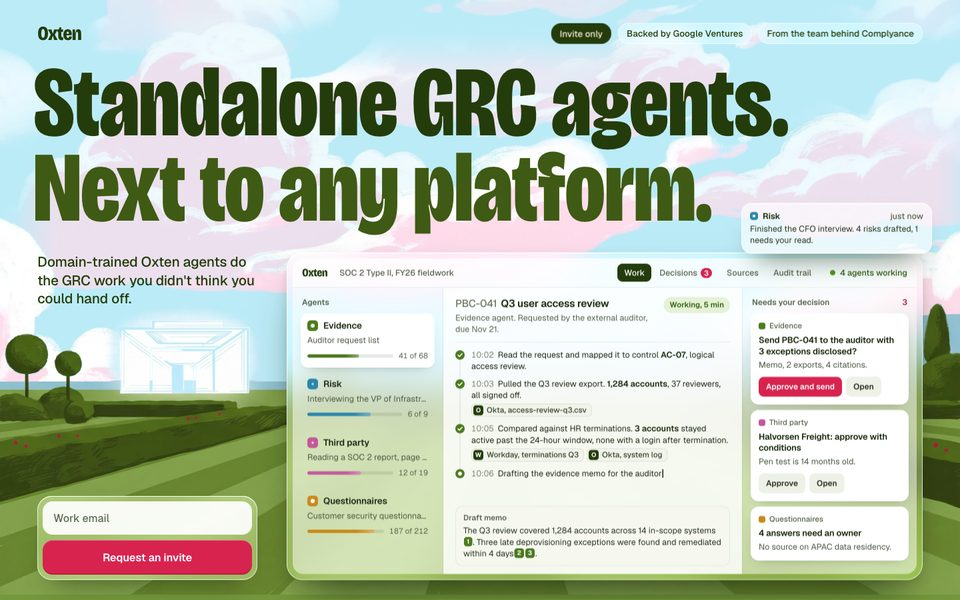
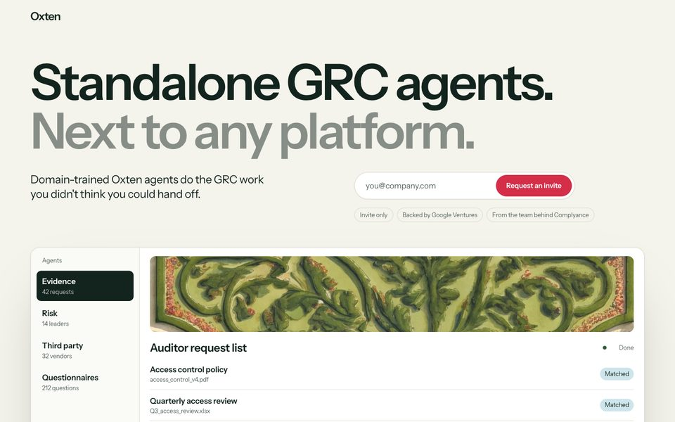
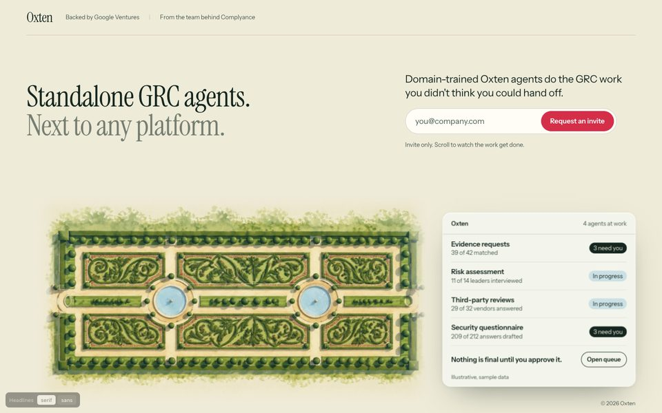
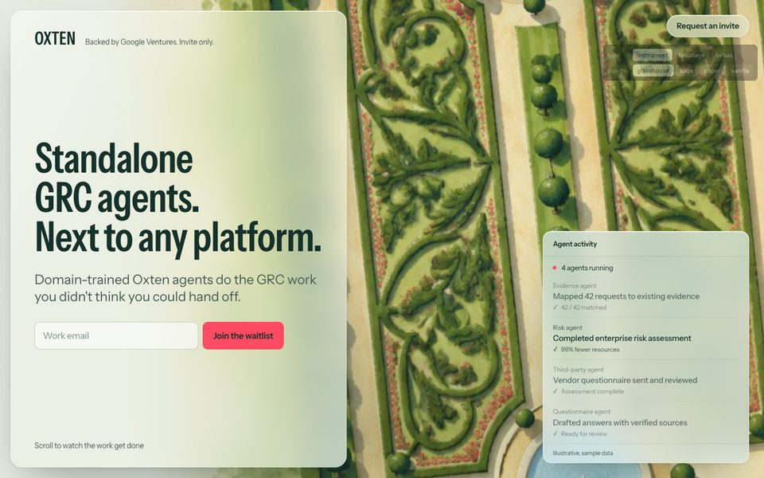
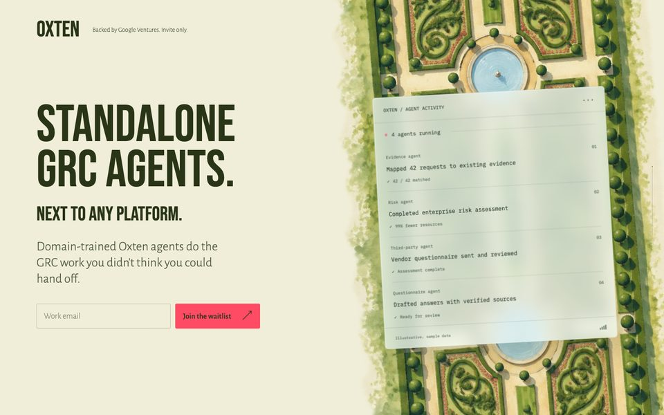

Oxten design versions
Every direction explored for the landing page, newest first. Internal review page.

Version 5, night to night
The previous home page. Night to night, floating panes and bento. Not approved by Richa and Pablo.
Open
Version 4
One garden from morning to night. The first full page in this direction.
Open
Direction A, the morning garden
Light and painterly, three floating glass panes.
Open
Direction B, the glasshouse at night
Dark and luminous, the product as the lit glasshouse.
Open
Direction C, Meadows turned up
Flat, joyful illustration, closest to the agency look.
Open
0.5, product first
Agent workspace as hero, garden as plots. Built in the app.
Open preview
0.4, the plan gets tended
Pinned scroll, the garden planted bed by bed.
View code
0.3, glass garden
Full-screen top-down garden under panes of glass.
View code
0.1, Lovable export
The starting point, as exported from Lovable.
Open preview